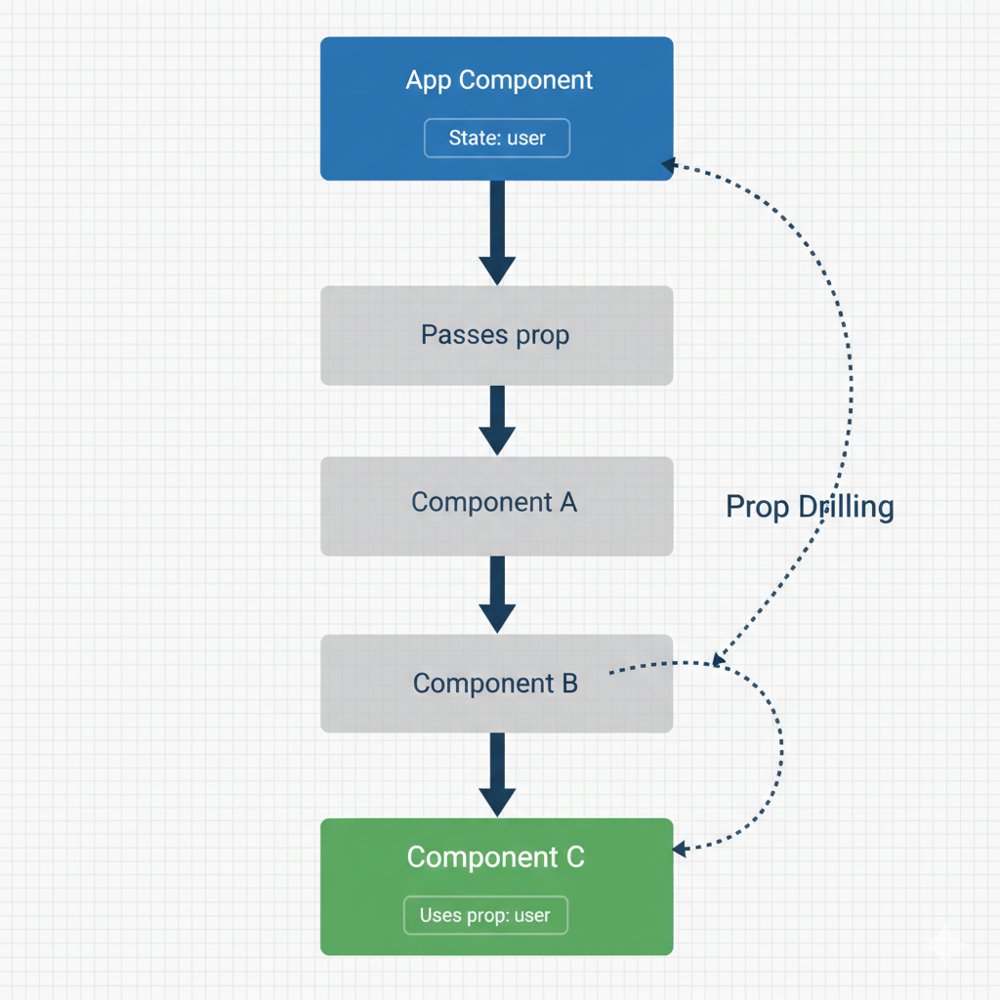
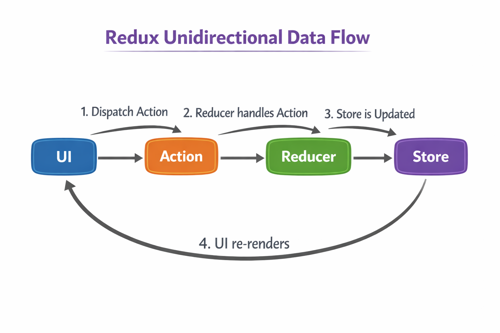

In a large React app, you often need to pass data from a top-level component to a deeply nested component. Passing this data through many intermediate components that don't need it is called "prop drilling." It makes code hard to read and maintain.
Imagine telling a secret to the first person in a long line, who then has to whisper it to the next, and so on, until it reaches the last person. The people in the middle don't care about the message, but they are forced to participate in passing it along.

Redux solves prop drilling by creating a single, centralized "store" for your entire application's state. Any component can access or update this state without needing props passed down to it.
Instead of passing cash from person to person, everyone uses a central bank (the Store). If you want to change your balance, you fill out a deposit slip (an Action) and give it to the teller (the Reducer), who updates your account. Anyone with permission can check the balance at any time.

Build a simple cart. The modern, recommended way to use Redux is with Redux Toolkit, which simplifies the setup.
src/ │ ├── app/ │ └── store.js │ ├── features/ │ └── cart/ │ └── cartSlice.js │ ├── components/ │ ├── Navbar.jsx │ └── ProductPage.jsx │ ├── App.jsx ├── main.jsx
npm install @reduxjs/toolkit react-reduxA "slice" automatically generates reducers and actions from a simple object.
import { createSlice } from '@reduxjs/toolkit';
const cartSlice = createSlice({
name: 'cart',
initialState: {
items: 0
},
reducers: {
addItem: (state) => {
state.items += 1;
},
removeItem: (state) => {
if (state.items > 0) {
state.items -= 1;
}
}
}
});
export const { addItem, removeItem } = cartSlice.actions;
export default cartSlice.reducer;import { configureStore } from '@reduxjs/toolkit';
import cartReducer from './cartSlice';
const store = configureStore({
reducer: {
cart: cartReducer
}
});
export default store;
import store from './store';
import { Provider } from 'react-redux';
ReactDOM.createRoot(document.getElementById('root')).render(
<React.StrictMode>
<Provider store={store}>
<App />
</Provider>
</React.StrictMode>
);import { useSelector } from 'react-redux';
function Navbar() {
const items = useSelector((state) => state.cart.items);
return (
<h2>Cart Items: {items}</h2>
);
}
export default Navbar;import { useDispatch } from 'react-redux';
import { addItem, removeItem } from './cartSlice';
function ProductPage() {
const dispatch = useDispatch();
return (
<div>
<button onClick={() => dispatch(addItem())}>
Add Item
</button>
<button onClick={() => dispatch(removeItem())}>
Remove Item
</button>
</div>
);
}
export default ProductPage;import Navbar from './Navbar';
import ProductPage from './ProductPage';
function App() {
return (
<div>
<Navbar />
<ProductPage />
</div>
);
}
export default App;Example:
dispatch(addItem())"Redux is used when multiple components need to share and update the same data without passing props."
Dynamic routes allow you to match URL patterns, like a user ID.
import { useParams } from 'react-router-dom';
const UserProfile = () => {
let { userId } = useParams(); // it reads the dynamic part of the URL
return <h1>Profile for User ID: {userId}</h1>;
};
<Route path="/users/:userId" element={<UserProfile />} />
<Link to="/users/123">View User 123</Link>